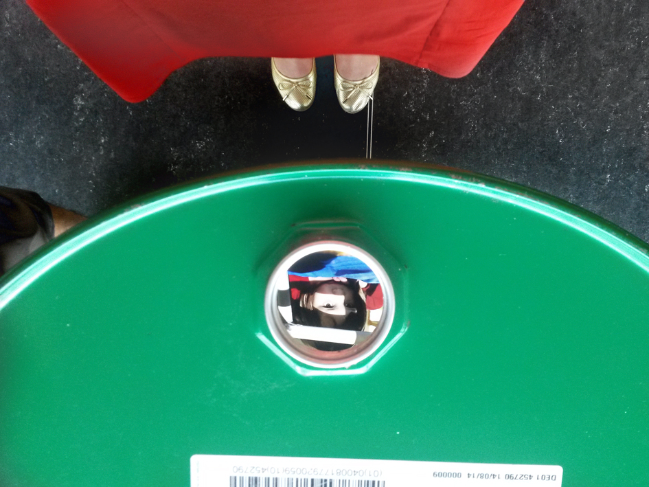
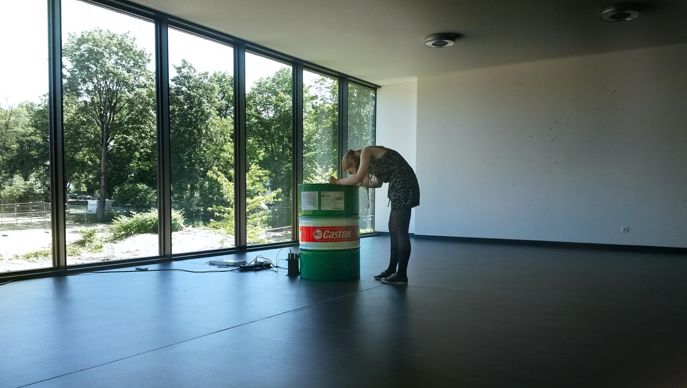

Objekte (2014):
audiovisual/instalación compuesta en colaboración con Nastasja Keller
video:
--
este trabajo ha sido presentado, ya sea en su formato original para proyección de video, barril y parlantes de vibración, o como video con audio estéreo, en las siguientes exposiciones:
Hochschule für Musik Carl Maria von Weber, Dresde, 2015
"next_generation 6.0" ZKM, Karlsruhe, 2015
"klingt gut" Symposium, HAW Hamburgo, 2016
"Dekontext" Kunstverein Jena, 2017
FIMAC, Cuenca, Ecuador, 2017
"The flying field", Montagehalle, Berlín, 2017
"Agora artes", Akademie der Künste, Berlín, 2019
--
algunas fotos de estas presentaciones a continuación

Nastasja asomándose adentro del barril, "klingt gut" HAW Hamburgo

alguien más asomándose, vista desde más lejos, "klingt gut" HAW Hamburgo

pantalla en ZKM antes del comienzo del evento "next_generation 6.0 concert iv"